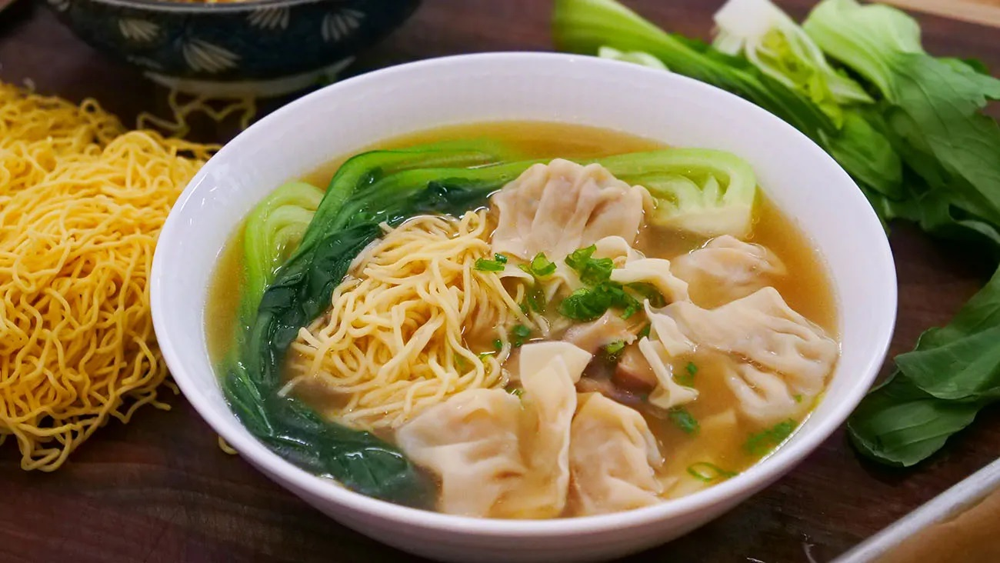

Wonton Noodle Soup

Preparation time: 35 minutes
Ingredients:
- 15 oz wonton noodles (fresh, unsteamed)
- 30 wontons
- 12 oz bok choy
- 1 piece green onion
- 8 piece shrimp (peeled, deveined)
- 14 oz chicken broth
- 1 tbsp fish sauce
- 1 tsp sesame oil
- 0.25 tsp white pepper
Preparation
- We'll start by washing and cutting our bok choy (12 oz) into quarters along the stem. Then, we'll chop our green onions (1 piece) into small pieces.
- Set the stove to high heat and bring a pot of water to a boil. Spread the noodles (15 oz) out and then dunk them in cold water for a few seconds.
- After dunking them in cold water, we'll place them in the pot again for about 15-20 seconds.
- For our broth, we'll add water (4 cup) and chicken broth (14 oz) to the pot, and bring it to a boil.
- Cook the bok choy in a hot water with olive oil and salt added to keep its green color.
- We'll dump the shrimp in as we start plating the bok choy on top of the noodles. The shrimp only need about a minute to cook.
- if you're starting with raw wontons (30 ), you'll boil them in a pot of vigorously boiling water for about 3-5 minutes until they start floating.
- Transfer the wontons onto the bowl of noodles, and carefully pour in the soup broth. Garnish with green onions.
Main Page